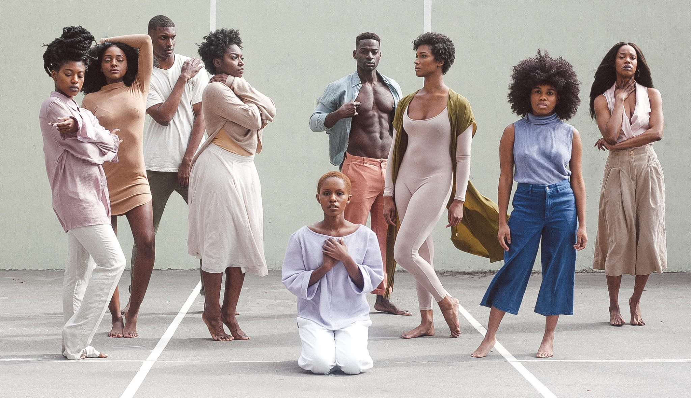

Social Media
The official definition of social media by Cambridge Dictionary is "websites and computer programs that allow people to communicate and share information on the internet using a computer or mobile phone:" This is a graph of the most popular social media.

Age of users of social media

Self Image
Body image is how one views their own body. Body image is apart of self esteem, self esteem is how one views themself as a whole. There are many influences that shape one's own self image, one huge influence is media. The definition of media is any means of mass communication, this includes; tv, internet, radio, newspaper, books. For this page we will be focusing on social media and the impacts it has on self image on children.
Stats on self image
60% of people using social media reported that it has impacted their self-esteem in a negative way.
50% of people reported social media having negative effects on their relationships.
80% of people reported that is easier to be deceived by others through their sharing on social media.
How can social media influence one's self image?
Humans are naturally social animals, we don't want to be left out of a social group or feel excluded from a social environment for a number of reasons; companionship, survival and security, affiliation and status, power and control and a sense of achievement. The social environment can be in school, work, home etc. In every social environment we act and adapt differently. One environment that some people don't usually notice is social media, that some people try and adapt to this environment. One aspect that social media can influence one's self image is by showing a rare beauty expectation which many people will want to fit in within this social environment and adapt their looks which is near impossible.

Showing a rare beauty expectation
This can be seen in many different areas of social media which almost everyone will come across, this includes both genders; rarely seeing a friends post about their imperfections, ads with models, the use of photoshop.
Users of social media
Most people wants their online image of themselves to be engaging, fun, interesting and will rarely post about their imperfection which everyone has, such as fat, bad skin, scars, stretch marks. After seeing post after post about how perfect everyone body appears, the individual is craving that type of body, with no imperfections, which is unrealistic.
Models
This can be the same said about ads with models, often using photoshop to make all imperfections disappear and to be appealing to all. This tells the viewer that if you buy these products you will look like this, which is not the case.
What can low self image do?
Self image is apart of self esteem which ties into mental health, if self image is low then mental is also low. When mental is low it will affect how that individual feels, act and think generally more negative. Some major issue that appears from low self image are unhealthy habits such as eating disorders, unhealthy exercises. These should be address immediately with care.
How to overcome this influence if affecting you
Changing our body may seem like the easiest method of improving our self image however it is much easier to change the way we think of our body's instead and recognising that we can't change our body's completely, only very little such as hair, muscles, nail etc. some little things that help are;
Avoid negative self talk and comparing yourself to others.
Remind yourself of your talents.
Do something that you enjoy.
Limit the amount of time on social media.
Remind yourself how unrealistic the models are and that everyone has imperfections.
Do some physical exercise.
However if you feel that you need further support, there are many support units there to help.Butterfly's National Helpline on 1800 33 4673 (Mon-Fri, 8am-9pm AEST) or available at support@thebutterflyfoundation.org.au
General practitioners (GP).
Psychologists
Psychiatrists
Mental health nurse practitioners.